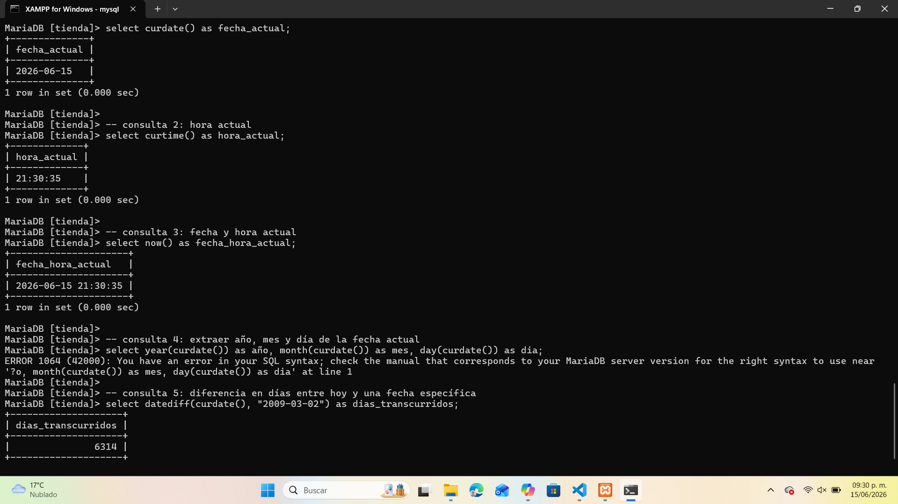

🕒 Funciones de Fecha y Hora en SQL
Las funciones de fecha y hora permiten obtener, comparar y calcular valores temporales dentro de una base de datos. Son muy útiles para registrar eventos, calcular antigüedad o mostrar la fecha y hora actual del sistema.
📋 Principales funciones
| Función | Descripción | Ejemplo SQL | Resultado |
|---|---|---|---|
| CURDATE() | Devuelve la fecha actual del sistema. | SELECT CURDATE() AS fecha_actual; |
2026‑06‑15 |
| CURTIME() | Devuelve la hora actual del sistema. | SELECT CURTIME() AS hora_actual; |
21:30:35 |
| NOW() | Devuelve la fecha y hora actual combinadas. | SELECT NOW() AS fecha_hora_actual; |
2026‑06‑15 21:30:35 |
| YEAR(), MONTH(), DAY() | Extraen el año, mes o día de una fecha. | SELECT YEAR(CURDATE()), MONTH(CURDATE()), DAY(CURDATE()); |
2026 | 06 | 15 |
| DATEDIFF() | Calcula la diferencia en días entre dos fechas. | SELECT DATEDIFF(CURDATE(), '2009‑03‑02') AS dias_transcurridos; |
6314 |
🧩 Ejemplo práctico en MySQL
En este ejemplo se muestran consultas para obtener la fecha, hora, fecha‑hora actual y calcular diferencias entre fechas:

💡 Recomendaciones
- Usa CURDATE() y CURTIME() para registrar la fecha y hora de creación de registros.
- Combina NOW() con ORDER BY para ordenar eventos cronológicamente.
- Aplica DATEDIFF() para calcular antigüedad o días transcurridos entre fechas.
- Extrae partes específicas de la fecha con YEAR(), MONTH() y DAY().
- Verifica el formato de fecha (YYYY‑MM‑DD) antes de realizar cálculos.